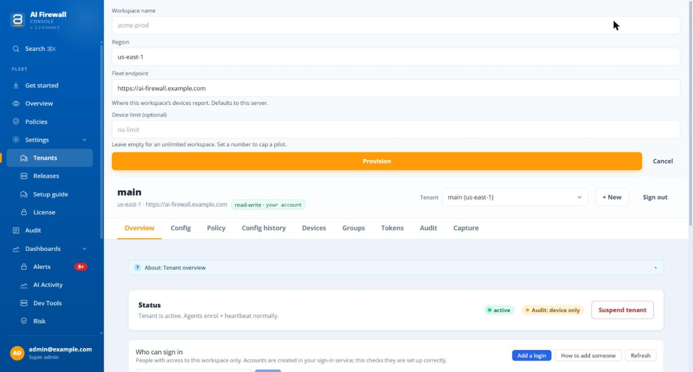
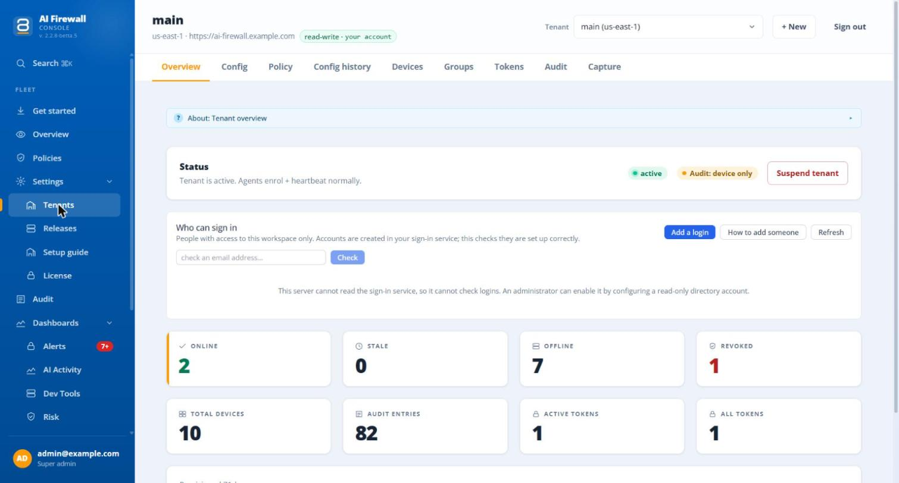
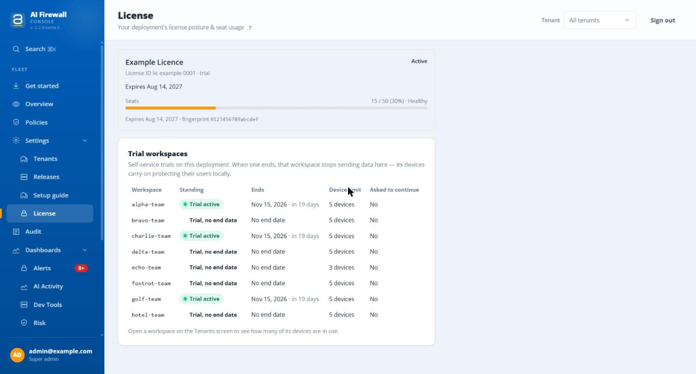

Workspaces¶
A workspace holds one organisation's computers, settings, keys and records. Setup creates the first one, named main unless you chose another name. Most servers need only that one.
In the portal, workspaces are under Settings > Tenants. Pick one in the list Tenant at the top of the page. The page title is the name of the workspace. A workspace has nine tabs: Overview, Config, Policy, Config history, Devices, Groups, Tokens, Audit and Capture. The tab you are on is part of the address, so a reload or the browser's Back button keeps it.
Create a workspace¶
Only a super-admin can create a workspace. On Tenants, select + New.

The picture shows a test workspace. Names, addresses and IDs are examples.
| Field | What to enter |
|---|---|
| Workspace name | A short name in lower case with digits and hyphens, for example finance. It cannot be changed or deleted later. A name that exists already is refused. |
| Region | A label. Pick any value. The server does not use it to choose where data is kept, and nothing changes with it. |
| Fleet endpoint | The address the computers report to. The portal fills in your own server address. Keep it. |
| Device limit (optional) | Leave empty for no limit. See Device limit. |
Select Provision. If it fails, the message starts with "Provision failed".
A workspace cannot be deleted
There is no way to delete a workspace in the portal. You can suspend it.
What a new workspace starts with¶
A new workspace gets a starting set of settings, chosen once, when it is created. Your server uses the set called production-monitoring. Changing the set later does not change workspaces that exist.
| Setting | Starting value |
|---|---|
| Protection mode | Record only: the agent records what it finds and changes nothing |
| Types of data | 17: person names, e-mail addresses, phone numbers, social security numbers, card numbers, IP addresses, web addresses, passport numbers, driver licence numbers, ID card numbers, tax numbers, dates of birth, addresses, credentials, IBAN, routing numbers and bank account numbers |
| Secrets | On, for five kinds of secret |
| Agent log lines | On, at level info |
| Who audit records name | The device only, not the person. See What the workspace records |
| Automatic updates | On |
Change these on the Config tab and on the Policies page. Move to Replace when you are ready for the agents to change what leaves the computer.
The Overview tab¶
Overview shows the status of the workspace, counters for devices and tokens, and a chip that says who audit records name. Select the chip to open the setting.

The picture shows a test workspace. Names, addresses and IDs are examples.
The chip reads Audit: person named or Audit: device only. It tells you only what the audit records carry. Every enrolled computer still reports its operating-system user name and host name to the server, and the device page shows them. See What the workspace records.
Device limit¶
A device limit is meant for a pilot. Type a number to stop the workspace accepting more computers than that.
- A workspace with a limit becomes a trial workspace with no end date. A Trial panel then appears on Overview.
- A computer counts toward the limit if it is not revoked and was seen in the last 30 days. A computer that is uninstalled still counts until it has been silent for 30 days, or you revoke it.
- When the limit is full, the next computer is refused. It keeps protecting its user on its own, as a standalone app.
- To lift the limit, select Convert to a paid workspace in the Trial panel. This ends the limit and the trial period. Computers keep working. An
adminof the workspace can do this.
There is no control in the portal to set an end date or to change the limit later. Ask your ScienceSoft representative.
Suspend a workspace¶
On Overview, Suspend tenant and Unsuspend tenant stop and start new joins. An admin of the workspace can do both. There is no confirmation question.
Suspending does not stop computers that have already joined
A suspended workspace refuses only new computers. Computers that have joined keep reporting, receiving settings and being protected. No block-all configuration is sent to them. To stop one computer, revoke it and revoke the keys that could bring it back.
Who can sign in¶
Overview has a panel Who can sign in. It lists the people who can open this workspace and checks each one.
| Badge | Meaning |
|---|---|
| Ready | The person can sign in and sees this workspace |
| Sees whole fleet | The person is in the group fleet-operators and sees every workspace. Give this only to people you trust with all of them |
| Needs attention | Something is missing: no account, no workspace attribute, no role, or the profile has no first or last name. The row says what |
Add a login needs a super-admin and a server that is allowed to create accounts. Fill in e-mail, first name, last name and Access (admin, analyst or auditor), then select Create login. The server makes a one-time password and shows it once. The person must change it at the first sign-in. If the server cannot create accounts, the panel says so and shows the steps to follow in the sign-in service. Then select Check to confirm. See Sign-in and roles for the same steps in the sign-in service.
Other actions on a row are Disable, Re-enable and Reset password. A disabled person is signed out at once, but pages that are already open can keep working for up to 15 minutes.
Licence and seats¶
Settings > License shows the licence of the whole server, not of one workspace.

The picture shows a test server. Names, the licence ID and the fingerprint are examples.
| Shown | Meaning |
|---|---|
| Active, In grace, Expired, No license | The state of the licence. In grace lasts 7 days after the end date |
| Seats | Computers counted against the licence, with the percentage used. Healthy is below 90%, Approaching cap from 90% to 100%, Over cap above 100% |
| Expiry date and fingerprint | When it ends, and the first characters of its fingerprint |
Seats are computers that are not revoked and were seen in the last 30 days, counted across all workspaces of the server.
- When the licence has run out or the seats are full, new computers cannot join. The refused computer works on its own and says so. Computers that have joined keep working.
- At exactly 100% new computers are already refused, even though the screen still says "Approaching cap".
- Over the seat count, every computer of the server shows the notice "License device limit reached". The notice says the computer keeps protecting its user and is still reported to your workspace, and that your IT team can free a device or extend the licence. It shows no numbers.
- A new licence is read when the server starts. There is no way to upload one in the portal. To renew, run
aifw setupagain on the server and give the path of the new.licensefile (see Install the server), then check the License page. - A licence dated after the server's clock lets the server start, with a warning, but refuses new computers until the clock is right (use NTP) and the control plane is restarted. A missing, changed or wrong-key licence still stops the server.
When the licence has a problem, the Devices screen shows a banner with the reason.